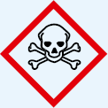
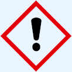
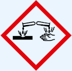

Zur Verhütung arbeitsbedingter Hauterkrankungen hat der Arbeitgeber gemäß Arbeitsschutzgesetz und DGUV Vorschrift 1 "Grundsätze der Prävention" die Pflicht, für alle Arbeitsplätze die Hautgefährdungen zu ermitteln, zu bewerten und die erforderlichen Schutzmaßnahmen abzuleiten.
Bei der Festlegung der Maßnahmen im Rahmen der Gefährdungsbeurteilung ist die Rangfolge der Schutzmaßnahmen nach dem STOP-Prinzip zu beachten.
Vorrangig ist zu prüfen, ob durch eine Substitution des Arbeitsstoffes oder Änderung des Arbeitsverfahrens die Hautgefährdung beseitigt oder verringert werden kann. Können weder technische noch organisatorische Lösungen die Hautgefährdung ausreichend minimieren, müssen zusätzlich persönliche Schutzmaßnahmen ergriffen werden.
Die durchgeführten Maßnahmen zum Hautschutz sind auf ihre Wirksamkeit hin zu überprüfen und gegebenenfalls anzupassen!
Hilfe bei der Erstellung der Gefährdungsbeurteilung geben die Fachkräfte für Arbeitssicherheit und die Betriebsärzte bzw. -ärztinnen. Zur Beratung können aber auch der zuständige Unfallversicherungsträger oder die zuständige staatliche Arbeitsschutzbehörde hinzugezogen werden.
Im Rahmen der Gefährdungsbeurteilung müssen alle Hautgefährdungen nach Art und Umfang ermittelt werden. Dabei sind physikalische, chemische oder biologische Einwirkungen zu berücksichtigen. Die Gefährdungsbeurteilung schließt auch die Bewertung des Risikos für die Entstehung von Hauterkrankungen ein!
Von besonderer Bedeutung sind mehrfache oder kombinierte Hautgefährdungen, da hierdurch oft ein deutlich erhöhtes Risiko für die Gesundheit der Haut besteht.
In den folgenden Kapiteln sind die häufigsten Hautgefährdungen aufgeführt. Weitere Hinweise zu Hautgefährdungen enthalten die TRGS 401 "Gefährdungen durch Hautkontakt" sowie die TRGS 907 "Verzeichnis sensibilisierender Stoffe und Tätigkeiten mit sensibilisierenden Stoffen".
Gefahrenkennzeichnungen auf Verpackungen und Sicherheitsdatenblättern von Produkten können auf hautschädigende Eigenschaften hinweisen. Das Risiko einer Gefährdung durch hautgefährdende oder hautresorptive Stoffe ist sowohl von den Stoffeigenschaften als auch von der Art, der Dauer und vom Ausmaß des Hautkontaktes abhängig!
| Piktogramm | H-Code | |
 Gefahr |
H 310 | Lebensgefahr bei Hautkontakt |
Gefahr |
H 311 | Giftig bei Hautkontakt |
 Achtung |
H 312 | Gesundheitsschädlich bei Hautkontakt |
 Gefahr |
H 314 | Verursacht schwere Verätzungen der Haut und schwere Augenschäden |
Achtung |
H 315 | Verursacht Hautreizungen |
Achtung |
H 317 EUH 066 |
Kann allergische Hautreaktionen verursachen Wiederholter Kontakt kann zu spröder und rissiger Haut führen |
Bei der Gefährdung durch Hautkontakt wird gemäß TRGS 401 zwischen einer geringen, mittleren und hohen Gefährdung unterschieden. In Anlage 4 der TRGS 401 befindet sich eine Gefährdungsmatrix zur Zuordnung in diese Gefährdungsgruppen. Aus der Zuordnung ergeben sich die durchzuführenden Schutzmaßnahmen.
Zu berücksichtigen sind auch wiederholte Expositionen gegenüber Arbeitsstoffen, die nicht als Gefahrstoffe gekennzeichnet sind, z. B. Kühlschmierstoffe in Anwendungskonzentrationen oder gewisse verdünnte Säuren und Laugen.
Nach heutigem Erkenntnisstand stellt Feuchtarbeit den Hauptrisikofaktor für die Entstehung eines irritativen Kontaktekzems (IKE) dar. Die einzelnen Arten der Feuchtarbeit wirken sich unterschiedlich auf die Entstehung eines IKE aus. Aktuelle Studien zeigen, dass die einzelnen Gefährdungen, die gemäß TRGS 401 zur Feuchtarbeit zählen, aus biologischer Sicht nicht gleich zu bewerten sind.
Die Barrierefunktion der Haut hängt wesentlich vom Zustand der äußeren Hornschichten und von einem intakten sauren Wasser-Fett-Film ab. Der Kontakt mit Wasser kann den sauren Wasser-Fett-Film teilweise zerstören und die Hautfette zwischen den Hornzellen auswaschen. Dadurch wird die Haut durchlässiger für Irritantien, Allergene oder Krankheitserreger.
Flüssigkeitsdichte Handschuhe blockieren die Schweißabgabe nach außen. Das kann zu einem Wärme- und Feuchtigkeitsstau unter den Handschuhen (Okklusion) und zum Aufweichen der Hornschicht führen.
Aktuellen Studien zufolge führt der Kontakt zu Wasser zu einer früheren und stärkeren Barriereschädigung als die Handschuhokklusion. Das ausschließliche Tragen von Schutzhandschuhen führt nicht zu einer Barriereschädigung. Es gibt jedoch Hinweise, dass die Haut nach dem Tragen von flüssigkeitsdichten Schutzhandschuhen empfindlicher gegenüber mechanischen Belastungen sowie gegenüber Tensiden reagiert. Weiterhin kann nach dem Tragen von flüssigkeitsdichten Schutzhandschuhen die Barriereregeneration verzögert sein.
Insgesamt zeigen Studien, dass eine Tätigkeit, bei der ausschließlich (vollschichtig) Schutzhandschuhe getragen werden müssen, anders bewertet werden sollte, als eine Tätigkeit, bei der Handschuhe oft gewechselt werden und zwischendurch weitere irritativ wirkende Belastungen bestehen, z. B. Händereinigung, Händedesinfektion.
Zur Vermeidung arbeitsbedingter Hauterkrankungen hat der Arbeitgeber auch die Gefährdungen zu beurteilen, die mit der Benutzung der Hautreinigungsmittel verbunden sind. Der Verschmutzungsgrad sollte durch vorrangige Maßnahmen sowie durch das Tragen von Schutzhandschuhen auf ein Minimum verringert werden.
Die Haut kann durch Hautreinigungsmittel auf unterschiedliche Weise irritiert werden:
Bei zu häufiger oder zu aggressiver Händereinigung ist mit der Entstehung eines irritativen Kontaktekzems zu rechnen. Das Irritationsvermögen ist abhängig von der Zusammensetzung des Hautreinigungsmittels, insbesondere jedoch von der Art und Konzentration der eingesetzten Tenside und gegebenenfalls der enthaltenen Reibekörper und Lösemittel.
Zudem ist zu berücksichtigen, dass die Kombination der häufigen tensidischen Händereinigung mit dem Tragen flüssigkeitsdichter Handschuhe zu einer verstärkten Irritation führen kann.
Eine erhöhte Gefährdung ist ebenfalls gegeben, wenn waschaktive Substanzen (Tenside in Seifen, Syndets etc.) vor dem Hautkontakt mit hautgefährdenden oder hautresorptiven Stoffen zum Einsatz kommen. Das ist z. B. der Fall, wenn die Hände zusätzlich zu einer Reinigung auch desinfiziert werden müssen.
In vielen Unternehmen kommen Kombipräparate von Hautreinigungs- und Desinfektionsmitteln zum Einsatz. Sie belasten durch die waschaktiven Substanzen die Haut sehr stark und werden nicht empfohlen. Ideal ist der Einsatz von zwei getrennten Spendern (Waschlotion und Desinfektion), da hier gezielt entschieden werden kann, ob eine alleinige Reinigung oder alleinige Desinfektion ausreicht, oder ob beides notwendig ist.
Die Hautgefährdung durch mechanische Einwirkungen wird meistens unterschätzt. Es ist von einer erhöhten Gefährdung auszugehen, wenn zusätzlich zu einer mechanischen Schädigung der Haut durch Mikroverletzungen ein Hautkontakt zu Gefahrstoffen besteht.
Zu den mechanischen Gefährdungen gehören zum Beispiel:
Bei bereits vorgeschädigter, entzündeter Haut können allergieauslösende Stoffe besser in die Haut eindringen und so leichter zu einer Sensibilisierung führen. Eine einmal erworbene Sensibilisierung bleibt in der Regel lebenslang bestehen. Allergene Stoffe können zum Beispiel vorkommen in:
Bei der Gefährdungsbeurteilung sind auch bereits vorhandene Sensibilisierungen von Beschäftigten zu berücksichtigen.
Hautbelastende Hobbies (z. B.: Gartenarbeit, Schwimmen, handwerkliche Tätigkeiten) können das Risiko einer beruflich bedingten Hauterkrankung erhöhen.
Besteht aufgrund der Tätigkeit oder des Arbeitsverfahrens Hautkontakt und ist eine mittlere bis hohe Gefährdung gemäß TRGS 401 gegeben, ist vorrangig für einen Ersatz dieser Stoffe zu sorgen. Ist diese Substitution nicht möglich, ist dies in der Gefährdungsbeurteilung zu begründen.
Beispiele für eine Substitution sind:
Unterstützung bei der Suche nach einer geeigneten Substitutionslösung gibt die TRGS 600 "Substitution" und die Anlage 6 der TRGS 401 "Gefährdung durch Hautkontakt".
Sind die Substitution nicht möglich, sind zusätzlich technische und organisatorische Maßnahmen zur Expositionsminderung erforderlich.
Beispiele für technische Schutzmaßnahmen sind:
Beispiele für organisatorische Schutzmaßnahmen sind:
Sind technische und organisatorische Maßnahmen nicht ausreichend, müssen zusätzlich persönliche Schutzmaßnahmen geprüft werden. Zu den persönlichen Schutzmaßnahmen zählen neben der Benutzung von Schutzhandschuhen
Persönliche Schutzmaßnahmen können eigene Gefährdungen nach sich ziehen, z. B. Allergene in Hautmitteln und Schutzhandschuhen oder Hautquellung bei längerem Tragen von flüssigkeitsdichten Schutzhandschuhen. Diese Gefährdungen müssen bei der Auswahl der persönlichen Schutzmaßnahmen berücksichtigt werden.
Die arbeitsmedizinische Vorsorge hilft, Hauterkrankungen frühzeitig zu erkennen und Präventionsmaßnahmen abzuleiten. Die Anlässe für eine arbeitsmedizinische Pflicht- oder Angebotsvorsorge werden im Anhang der "Arbeitsmedizinischen Vorsorgeverordnung" (ArbMedVV) detailliert benannt. Zum Beispiel ist bei Feuchtarbeit von mehr als 2 Stunden die arbeitsmedizinische Vorsorge anzubieten, bei Feuchtarbeit von mehr als 4 Stunden ist die arbeitsmedizinische Pflichtvorsorge durchzuführen.